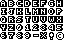

Cet article est la suite de nombreux articles sur WebGL. Le dernier traitait de l’utilisation de textures pour rendre du texte dans WebGL. Si vous ne l’avez pas lu, vous voudrez peut-être le consulter avant de continuer.
Dans le dernier article, nous avons vu comment utiliser une texture pour dessiner du texte dans votre scène WebGL. Cette technique est très courante et elle est excellente pour des choses comme les jeux multijoueurs où vous voulez afficher un nom au-dessus d’un avatar. Comme ce nom change rarement, c’est parfait.
Disons que vous voulez rendre beaucoup de texte qui change souvent comme une interface utilisateur. Étant donné le dernier exemple de l’article précédent, une solution évidente est de créer une texture pour chaque lettre. Changeons le dernier exemple pour faire ça.
+var names = [
+ "anna", // 0
+ "colin", // 1
+ "james", // 2
+ "danny", // 3
+ "kalin", // 4
+ "hiro", // 5
+ "eddie", // 6
+ "shu", // 7
+ "brian", // 8
+ "tami", // 9
+ "rick", // 10
+ "gene", // 11
+ "natalie",// 12,
+ "evan", // 13,
+ "sakura", // 14,
+ "kai", // 15,
+];
// créer des textures de texte, une pour chaque lettre
var textTextures = [
+ "a", // 0
+ "b", // 1
+ "c", // 2
+ "d", // 3
+ "e", // 4
+ "f", // 5
+ "g", // 6
+ "h", // 7
+ "i", // 8
+ "j", // 9
+ "k", // 10
+ "l", // 11
+ "m", // 12,
+ "n", // 13,
+ "o", // 14,
+ "p", // 14,
+ "q", // 14,
+ "r", // 14,
+ "s", // 14,
+ "t", // 14,
+ "u", // 14,
+ "v", // 14,
+ "w", // 14,
+ "x", // 14,
+ "y", // 14,
+ "z", // 14,
].map(function(name) {
* var textCanvas = makeTextCanvas(name, 10, 26);
Ensuite, au lieu de rendre un quad pour chaque nom, nous rendrons un quad pour chaque lettre dans chaque nom.
// configurer pour dessiner le texte.
+// Parce que chaque lettre utilise les mêmes attributs et le même programme
+// on a seulement besoin de faire ça une fois.
+gl.useProgram(textProgramInfo.program);
+setBuffersAndAttributes(gl, textProgramInfo.attribSetters, textBufferInfo);
textPositions.forEach(function(pos, ndx) {
+ var name = names[ndx];
+
+ // pour chaque lettre
+ for (var ii = 0; ii < name.length; ++ii) {
+ var letter = name.charCodeAt(ii);
+ var letterNdx = letter - "a".charCodeAt(0);
+
+ // sélectionner une texture de lettre
+ var tex = textTextures[letterNdx];
// utiliser juste la position du 'F' pour le texte
// parce que pos est dans l'espace de vue, cela signifie que c'est un vecteur depuis l'œil vers
// une certaine position. Donc on translate le long de ce vecteur en revenant vers l'œil d'une certaine distance
var fromEye = m4.normalize(pos);
var amountToMoveTowardEye = 150; // parce que le F fait 150 unités de long
var viewX = pos[0] - fromEye[0] * amountToMoveTowardEye;
var viewY = pos[1] - fromEye[1] * amountToMoveTowardEye;
var viewZ = pos[2] - fromEye[2] * amountToMoveTowardEye;
var desiredTextScale = -1 / gl.canvas.height; // pixels 1x1
var scale = viewZ * desiredTextScale;
var textMatrix = m4.translate(projectionMatrix, viewX, viewY, viewZ);
textMatrix = m4.scale(textMatrix, tex.width * scale, tex.height * scale, 1);
+textMatrix = m4.translate(textMatrix, ii, 0, 0);
// définir l'uniform de texture
textUniforms.u_texture = tex.texture;
copyMatrix(textMatrix, textUniforms.u_matrix);
setUniforms(textProgramInfo.uniformSetters, textUniforms);
// Dessiner le texte.
gl.drawElements(gl.TRIANGLES, textBufferInfo.numElements, gl.UNSIGNED_SHORT, 0);
}
});
Et vous pouvez voir que ça fonctionne
Malheureusement, c’est LENT. L’exemple ci-dessous ne le montre pas, mais nous dessinons individuellement 73 quads. Nous calculons 73 matrices et 219 multiplications de matrices. Une interface utilisateur typique pourrait facilement avoir 1000 lettres affichées. C’est beaucoup trop de travail pour obtenir une fréquence d’images raisonnable.
Donc pour corriger ça, la façon dont c’est habituellement fait est de créer un atlas de textures contenant toutes les lettres. Nous avons vu ce qu’est un atlas de textures quand nous avons parlé de texturer les 6 faces d’un cube.
En cherchant sur le web, j’ai trouvé cet atlas de textures de police open source simple

Créons des données que nous pouvons utiliser pour aider à générer des positions et des coordonnées de texture
var fontInfo = {
letterHeight: 8,
spaceWidth: 8,
spacing: -1,
textureWidth: 64,
textureHeight: 40,
glyphInfos: {
'a': { x: 0, y: 0, width: 8, },
'b': { x: 8, y: 0, width: 8, },
'c': { x: 16, y: 0, width: 8, },
'd': { x: 24, y: 0, width: 8, },
'e': { x: 32, y: 0, width: 8, },
'f': { x: 40, y: 0, width: 8, },
'g': { x: 48, y: 0, width: 8, },
'h': { x: 56, y: 0, width: 8, },
'i': { x: 0, y: 8, width: 8, },
'j': { x: 8, y: 8, width: 8, },
'k': { x: 16, y: 8, width: 8, },
'l': { x: 24, y: 8, width: 8, },
'm': { x: 32, y: 8, width: 8, },
'n': { x: 40, y: 8, width: 8, },
'o': { x: 48, y: 8, width: 8, },
'p': { x: 56, y: 8, width: 8, },
'q': { x: 0, y: 16, width: 8, },
'r': { x: 8, y: 16, width: 8, },
's': { x: 16, y: 16, width: 8, },
't': { x: 24, y: 16, width: 8, },
'u': { x: 32, y: 16, width: 8, },
'v': { x: 40, y: 16, width: 8, },
'w': { x: 48, y: 16, width: 8, },
'x': { x: 56, y: 16, width: 8, },
'y': { x: 0, y: 24, width: 8, },
'z': { x: 8, y: 24, width: 8, },
'0': { x: 16, y: 24, width: 8, },
'1': { x: 24, y: 24, width: 8, },
'2': { x: 32, y: 24, width: 8, },
'3': { x: 40, y: 24, width: 8, },
'4': { x: 48, y: 24, width: 8, },
'5': { x: 56, y: 24, width: 8, },
'6': { x: 0, y: 32, width: 8, },
'7': { x: 8, y: 32, width: 8, },
'8': { x: 16, y: 32, width: 8, },
'9': { x: 24, y: 32, width: 8, },
'-': { x: 32, y: 32, width: 8, },
'*': { x: 40, y: 32, width: 8, },
'!': { x: 48, y: 32, width: 8, },
'?': { x: 56, y: 32, width: 8, },
},
};
Et nous chargerons l’image comme nous avons chargé des textures avant
// Créer une texture.
var glyphTex = gl.createTexture();
gl.bindTexture(gl.TEXTURE_2D, glyphTex);
// Remplir la texture avec un pixel bleu 1x1.
gl.texImage2D(gl.TEXTURE_2D, 0, gl.RGBA, 1, 1, 0, gl.RGBA, gl.UNSIGNED_BYTE,
new Uint8Array([0, 0, 255, 255]));
// Charger une image de manière asynchrone
var image = new Image();
image.src = "resources/8x8-font.png";
image.addEventListener('load', function() {
// Maintenant que l'image est chargée, la copier dans la texture.
gl.bindTexture(gl.TEXTURE_2D, glyphTex);
gl.pixelStorei(gl.UNPACK_PREMULTIPLY_ALPHA_WEBGL, true);
gl.texImage2D(gl.TEXTURE_2D, 0, gl.RGBA, gl.RGBA,gl.UNSIGNED_BYTE, image);
gl.texParameteri(gl.TEXTURE_2D, gl.TEXTURE_WRAP_S, gl.CLAMP_TO_EDGE);
gl.texParameteri(gl.TEXTURE_2D, gl.TEXTURE_WRAP_T, gl.CLAMP_TO_EDGE);
gl.texParameteri(gl.TEXTURE_2D, gl.TEXTURE_MIN_FILTER, gl.NEAREST);
gl.texParameteri(gl.TEXTURE_2D, gl.TEXTURE_MAG_FILTER, gl.NEAREST);
});
Maintenant que nous avons une texture avec des glyphes dedans, nous devons l’utiliser. Pour ce faire, nous allons construire des sommets de quad à la volée pour chaque glyphe. Ces sommets utiliseront des coordonnées de texture pour sélectionner un glyphe particulier.
Étant donné une chaîne, construisons les sommets
function makeVerticesForString(fontInfo, s) {
var len = s.length;
var numVertices = len * 6;
var positions = new Float32Array(numVertices * 2);
var texcoords = new Float32Array(numVertices * 2);
var offset = 0;
var x = 0;
var maxX = fontInfo.textureWidth;
var maxY = fontInfo.textureHeight;
for (var ii = 0; ii < len; ++ii) {
var letter = s[ii];
var glyphInfo = fontInfo.glyphInfos[letter];
if (glyphInfo) {
var x2 = x + glyphInfo.width;
var u1 = glyphInfo.x / maxX;
var v1 = (glyphInfo.y + fontInfo.letterHeight - 1) / maxY;
var u2 = (glyphInfo.x + glyphInfo.width - 1) / maxX;
var v2 = glyphInfo.y / maxY;
// 6 sommets par lettre
positions[offset + 0] = x;
positions[offset + 1] = 0;
texcoords[offset + 0] = u1;
texcoords[offset + 1] = v1;
positions[offset + 2] = x2;
positions[offset + 3] = 0;
texcoords[offset + 2] = u2;
texcoords[offset + 3] = v1;
positions[offset + 4] = x;
positions[offset + 5] = fontInfo.letterHeight;
texcoords[offset + 4] = u1;
texcoords[offset + 5] = v2;
positions[offset + 6] = x;
positions[offset + 7] = fontInfo.letterHeight;
texcoords[offset + 6] = u1;
texcoords[offset + 7] = v2;
positions[offset + 8] = x2;
positions[offset + 9] = 0;
texcoords[offset + 8] = u2;
texcoords[offset + 9] = v1;
positions[offset + 10] = x2;
positions[offset + 11] = fontInfo.letterHeight;
texcoords[offset + 10] = u2;
texcoords[offset + 11] = v2;
x += glyphInfo.width + fontInfo.spacing;
offset += 12;
} else {
// on n'a pas ce caractère donc on avance juste
x += fontInfo.spaceWidth;
}
}
// retourner des ArrayBufferViews pour la portion des TypedArrays
// qui ont réellement été utilisés.
return {
arrays: {
position: new Float32Array(positions.buffer, 0, offset),
texcoord: new Float32Array(texcoords.buffer, 0, offset),
},
numVertices: offset / 2,
};
}
Pour l’utiliser, nous allons créer manuellement un bufferInfo. (Voir l’article précédent si vous ne vous souvenez pas de ce qu’est un bufferInfo).
// Créer manuellement un bufferInfo
var textBufferInfo = {
attribs: {
a_position: { buffer: gl.createBuffer(), numComponents: 2, },
a_texcoord: { buffer: gl.createBuffer(), numComponents: 2, },
},
numElements: 0,
};
Et ensuite pour rendre le texte, nous mettrons à jour les buffers. Nous rendrons aussi le texte dynamique
textPositions.forEach(function(pos, ndx) {
var name = names[ndx];
+ var s = name + ":" + pos[0].toFixed(0) + "," + pos[1].toFixed(0) + "," + pos[2].toFixed(0);
+ var vertices = makeVerticesForString(fontInfo, s);
+
+ // mettre à jour les buffers
+ textBufferInfo.attribs.a_position.numComponents = 2;
+ gl.bindBuffer(gl.ARRAY_BUFFER, textBufferInfo.attribs.a_position.buffer);
+ gl.bufferData(gl.ARRAY_BUFFER, vertices.arrays.position, gl.DYNAMIC_DRAW);
+ gl.bindBuffer(gl.ARRAY_BUFFER, textBufferInfo.attribs.a_texcoord.buffer);
+ gl.bufferData(gl.ARRAY_BUFFER, vertices.arrays.texcoord, gl.DYNAMIC_DRAW);
// utiliser juste la position de vue du 'F' pour le texte
// parce que pos est dans l'espace de vue, cela signifie que c'est un vecteur depuis l'œil vers
// une certaine position. Donc on translate le long de ce vecteur en revenant vers l'œil d'une certaine distance
var fromEye = m4.normalize(pos);
var amountToMoveTowardEye = 150; // parce que le F fait 150 unités de long
var viewX = pos[0] - fromEye[0] * amountToMoveTowardEye;
var viewY = pos[1] - fromEye[1] * amountToMoveTowardEye;
var viewZ = pos[2] - fromEye[2] * amountToMoveTowardEye;
var desiredTextScale = -1 / gl.canvas.height * 2; // pixels 1x1
var scale = viewZ * desiredTextScale;
var textMatrix = m4.translate(projectionMatrix, viewX, viewY, viewZ);
textMatrix = m4.scale(textMatrix, scale, scale, 1);
// configurer pour dessiner le texte.
gl.useProgram(textProgramInfo.program);
gl.bindVertexArray(textVAO);
m4.copy(textMatrix, textUniforms.u_matrix);
webglUtils.setUniforms(textProgramInfo, textUniforms);
// Dessiner le texte.
gl.drawArrays(gl.TRIANGLES, 0, vertices.numVertices);
});
Et voilà
C’est la technique de base pour utiliser un atlas de textures de glyphes. Il y a quelques choses évidentes à ajouter ou des façons de l’améliorer.
Réutiliser les mêmes tableaux.
Actuellement makeVerticesForString alloue de nouveaux Float32Arrays chaque fois qu’elle est appelée.
Cela va probablement éventuellement causer des ralentissements de ramasse-miettes. Réutiliser les
mêmes tableaux serait probablement mieux. Vous agrandiriez le tableau s’il n’est pas assez grand
et garderez cette taille
Ajouter la prise en charge du retour à la ligne
Vérifiez \n et descendez d’une ligne lors de la génération de sommets. Cela faciliterait
la création de paragraphes de texte.
Ajouter la prise en charge de toutes sortes d’autres mises en forme.
Si vous voulez centrer le texte ou le justifier, vous pourriez ajouter tout ça.
Ajouter la prise en charge des couleurs de sommets.
Vous pourriez alors colorer le texte avec différentes couleurs par lettre. Bien sûr, vous devriez décider comment spécifier quand changer de couleurs.
Envisager de générer l’atlas de textures de glyphes à l’exécution en utilisant un canvas 2D
L’autre grand problème que je ne vais pas aborder est que les textures ont une taille limitée mais les polices sont effectivement illimitées. Si vous voulez prendre en charge tout Unicode pour pouvoir gérer le chinois, le japonais, l’arabe et toutes les autres langues, eh bien, en 2015, il y avait plus de 110 000 glyphes dans Unicode ! Vous ne pouvez pas tous les mettre dans des textures. Il n’y a tout simplement pas assez de place.
La façon dont le système d’exploitation et les navigateurs gèrent ça quand ils sont accélérés par GPU est d’utiliser un cache de textures de glyphes. Comme ci-dessus, ils pourraient mettre des textures dans un atlas de textures, mais ils rendent probablement la zone pour chaque glyphe de taille fixe. Ils gardent les glyphes les plus récemment utilisés dans la texture. S’ils ont besoin de dessiner un glyphe qui n’est pas dans la texture, ils remplacent le moins récemment utilisé par le nouveau dont ils ont besoin. Bien sûr, si ce glyphe qu’ils sont sur le point de remplacer est encore référencé par un quad qui doit encore être dessiné, ils doivent dessiner avec ce qu’ils ont avant de remplacer le glyphe.
Une autre chose que vous pouvez faire, bien que je ne la recommande pas, est de combiner cette technique avec la technique précédente. Vous pouvez rendre des glyphes directement dans une autre texture.
Encore une autre façon de dessiner du texte dans WebGL est d’utiliser réellement du texte 3D. Le ‘F’ dans tous les exemples ci-dessus est une lettre 3D. Vous en créeriez une pour chaque lettre. Les lettres 3D sont courantes pour les titres et les logos de films, mais pas grand-chose d’autre.
J’espère que ça couvre le texte dans WebGL.